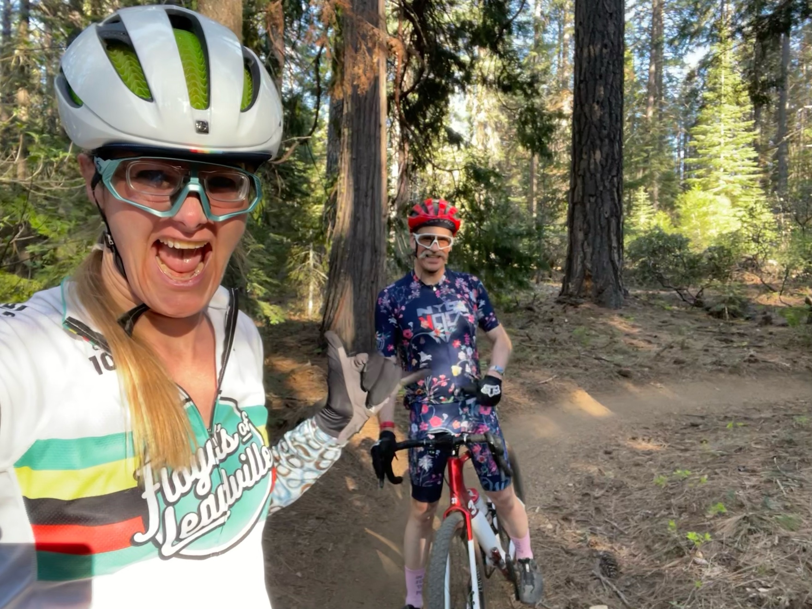
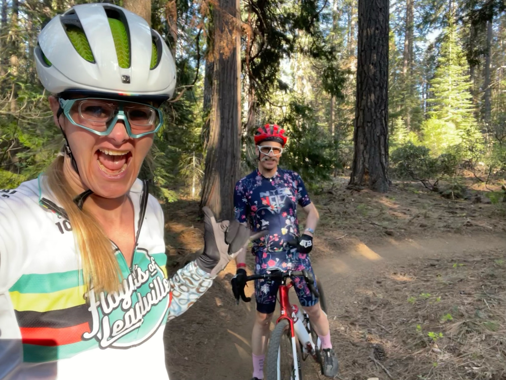

2023 Grinduro! at Mt. Shasta - 61 miles race where they interestingly only time four segments (~20% of the race) of various representative skill/terrain combinations. I had rough rear derailleur issues after lunch and wasn’t sure was gonna finish!
60-100F heat with elevation and sun. Oof!
There were 10 of us, amazingly, from our regular weekly riding group, East Bay Gravel Bikers (EBGB), plus 2 others who have ridden with us before. That's the largest squad we've ever had at a bike race before!
All 12 of us made it through, yay!! üôåüëë
The four timed segments:
| type | distance | feet up | feet down |
| -------------------------------------------------- | -------: | ------: | --------: |
| Gravel Descent (fire roads) | 4.2mi | 125 | 1100 |
| Road Time Trial | 2.7mi | 250 | |
| Gravel Climb (fire roads) | 2.7mi | 590 | 10 |
| Singletrack Rolling (single trail through forests) | 2.5mi | 230 | 470 |
[Maps and more on strava](https://www.strava.com/activities/9110145866)
(My watch died last for the last 10 miles).
[Great 14min video capturing Grinduro! perfectly](https://www.youtube.com/watch?v=zgz70lDdKUo) :)
A special treat was a "prologue" preview (see bottom of post) the day/evening before that was to be 2000+ feet of climbing over 17 miles. Myself & another rider figured out how to "hack" it down to ~1000 feet and ~9.5 miles. That still got us to do the *Jaw Dropping* and amazing mostly downhill single-track (think marble railroad through the forest!). It was a little scary for the first 45 seconds, then smoothed out. Hunter and I started shouting to each other how amazing it was. I started singing.. It was the best trail we've ever been on! "Gateway" trail, leading to "Pig Farm" trail, and finishing with a more mixed terrain "Foundation Trail".
Mt. Shasta snowy top is a scene stealer in every picture!
 We're queued up, ready to go, sunny and ~60F starting temps. Nice!
A minute before race start. Giddy as always!
Fun, fast side roads on way to first offroad climb and then timed downhill fire roads.
Met up with Hunter, Drew, Mike (back to camera) and more at the first rest stop.
Snow in middle of May on a hot day!
Total surprise lake trail on return towards start and lunch spot!
It feels like the Swiss Alps (and yes, I've been)!
Great little bridge. Sign says "NO JUMPING OFF BRIDGE". _Of course_ that's all I and everyone else can think about now... üòº
Just _look_ at that singletrack.
Lunch time! Hunter was about 5-10 mins there before me. Got to touch base with Mike, Drew, David and more of the EBGB squad :)
We've got the same bike! Never seen another of my bike in the Wild before!
Shifting's going bad now. First stop -- cleaned chain and added dry lube to try to improve things. There was this fun carved stump right where I stopped under tree shade.
Shifting is going very badly now. I can't into my biggest climbing gear at all. And I've got more of this long dirt climb ahead, ending with 1-2 miles of 10% average grade (which I thought was dirt, so I'm panicking now -- but turned out to be road).
This crazy guy (also *super nice*), Walter, helped me save my rear derailleur! I figured out one of the adjuster bolts, but was confounded by the other. He sorted that out and explained it to me -- and a couple days later, while riding, it occurred to me how/why that 2nd adjuster knob works and what it does! progress!
And... yah... he biked *the entire thing* including the marble railroad single track through the woods, on that bike!
I'm very tired at this point -- everyone is. It's been a bit too hot, at elevation, with hard terrain and 6000'+ feet of climbing. I was cursing the final climb about 15 minutes before this. And yet... **my gosh** just _look_ at this single track and view!
Almost done!
Relax time. Check out my jersey's sweated salt and dirt üòù Michael has the right idea.
Enjoying post-ride relaxing & beer at Drew's campsite.
Course overview, my race number plate, my sharpie-d "cheat sheet" I always tape around my handlebars and rotate as I go.
Red is bad or the timed segments; green are rest stops.
Suuuper helpful to visualize what's coming and where to conserve and burn energy.
## Results
How'd I do?
Hunter meeting me rolling in at the finish line!
* 4 segment times: 65min 54sec (39sec (!) behind hunter. I beat him downhill; he beat me uphill)
* 8hr, 29min elapsed time start-to-finish (40min behind hunter)
* total moving time: 6hr, 30min (Hunter moving time was 6h 2m)
* from my stats, I spent ~5m longer post-lunch prep; ~5m derailleur clean/lube; ~14m derailleur fixing -- so that could be ~5m longer than hunter! üéâ
Results:
* 2nd of 7 in women's 51-60 age group
* 46th of 87 women (top 55%)
* 284th of 464 total riders (406 + 58 DNF) (top 61%)
* in our group of _fast_ EBGB 10 riders, I finished 5th on the "gravel climb" segment (hunter finished 3rd)
photo by Jay Melena Studio
---
## The Epilogue Prologue
Since we were racing the **most amazing** trail ever -- the singletrack "marble railroad" through the woods, and it was one of the last parts of the long ride, it was harder to enjoy and almost noone was able to get pictures.
**However!** the event offered a "Prologue" the day/night before, at your own start time & pace. David & I "hacked" the 16mile/2000' climb down to a shortcut 10mile/1000' climb. Hunter & I did it together, near the end of the day, and **OMG** it was the best trail we've ever been on.
Climbing to adventure.

Riding on rails through the forest at the magic lighting time ~630pm. We're blissed out of our minds.
I'll never forget this magical ride. So glad 3 of us got to do it!
## The Squad
Here's all 10 of our EBGB urban dance squad from the Bay Area!
We're at the downtown Pipeline Brewery -- having fun & giddy for the race tomorrow morning. Thanks Drew for being the ringleader to get us up to the only-second-ever Grinduro! at Mt. Shasta.
Love this crew! ü•∞
We're queued up, ready to go, sunny and ~60F starting temps. Nice!
A minute before race start. Giddy as always!
Fun, fast side roads on way to first offroad climb and then timed downhill fire roads.
Met up with Hunter, Drew, Mike (back to camera) and more at the first rest stop.
Snow in middle of May on a hot day!
Total surprise lake trail on return towards start and lunch spot!
It feels like the Swiss Alps (and yes, I've been)!
Great little bridge. Sign says "NO JUMPING OFF BRIDGE". _Of course_ that's all I and everyone else can think about now... üòº
Just _look_ at that singletrack.
Lunch time! Hunter was about 5-10 mins there before me. Got to touch base with Mike, Drew, David and more of the EBGB squad :)
We've got the same bike! Never seen another of my bike in the Wild before!
Shifting's going bad now. First stop -- cleaned chain and added dry lube to try to improve things. There was this fun carved stump right where I stopped under tree shade.
Shifting is going very badly now. I can't into my biggest climbing gear at all. And I've got more of this long dirt climb ahead, ending with 1-2 miles of 10% average grade (which I thought was dirt, so I'm panicking now -- but turned out to be road).
This crazy guy (also *super nice*), Walter, helped me save my rear derailleur! I figured out one of the adjuster bolts, but was confounded by the other. He sorted that out and explained it to me -- and a couple days later, while riding, it occurred to me how/why that 2nd adjuster knob works and what it does! progress!
And... yah... he biked *the entire thing* including the marble railroad single track through the woods, on that bike!
I'm very tired at this point -- everyone is. It's been a bit too hot, at elevation, with hard terrain and 6000'+ feet of climbing. I was cursing the final climb about 15 minutes before this. And yet... **my gosh** just _look_ at this single track and view!
Almost done!
Relax time. Check out my jersey's sweated salt and dirt üòù Michael has the right idea.
Enjoying post-ride relaxing & beer at Drew's campsite.
Course overview, my race number plate, my sharpie-d "cheat sheet" I always tape around my handlebars and rotate as I go.
Red is bad or the timed segments; green are rest stops.
Suuuper helpful to visualize what's coming and where to conserve and burn energy.
## Results
How'd I do?
Hunter meeting me rolling in at the finish line!
* 4 segment times: 65min 54sec (39sec (!) behind hunter. I beat him downhill; he beat me uphill)
* 8hr, 29min elapsed time start-to-finish (40min behind hunter)
* total moving time: 6hr, 30min (Hunter moving time was 6h 2m)
* from my stats, I spent ~5m longer post-lunch prep; ~5m derailleur clean/lube; ~14m derailleur fixing -- so that could be ~5m longer than hunter! üéâ
Results:
* 2nd of 7 in women's 51-60 age group
* 46th of 87 women (top 55%)
* 284th of 464 total riders (406 + 58 DNF) (top 61%)
* in our group of _fast_ EBGB 10 riders, I finished 5th on the "gravel climb" segment (hunter finished 3rd)
photo by Jay Melena Studio
---
## The Epilogue Prologue
Since we were racing the **most amazing** trail ever -- the singletrack "marble railroad" through the woods, and it was one of the last parts of the long ride, it was harder to enjoy and almost noone was able to get pictures.
**However!** the event offered a "Prologue" the day/night before, at your own start time & pace. David & I "hacked" the 16mile/2000' climb down to a shortcut 10mile/1000' climb. Hunter & I did it together, near the end of the day, and **OMG** it was the best trail we've ever been on.
Climbing to adventure.

Riding on rails through the forest at the magic lighting time ~630pm. We're blissed out of our minds.
I'll never forget this magical ride. So glad 3 of us got to do it!
## The Squad
Here's all 10 of our EBGB urban dance squad from the Bay Area!
We're at the downtown Pipeline Brewery -- having fun & giddy for the race tomorrow morning. Thanks Drew for being the ringleader to get us up to the only-second-ever Grinduro! at Mt. Shasta.
Love this crew! ü•∞